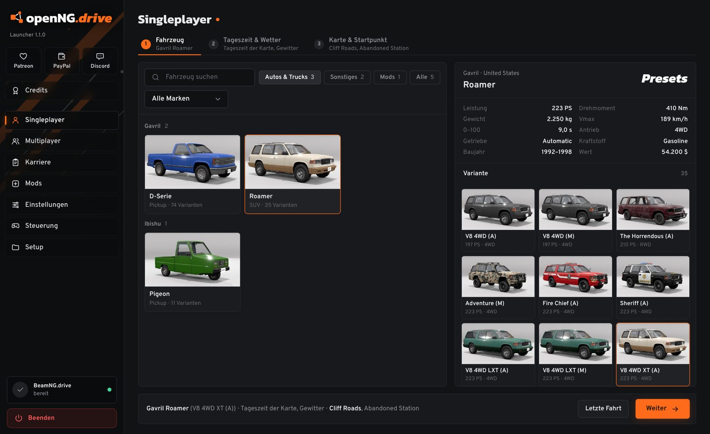
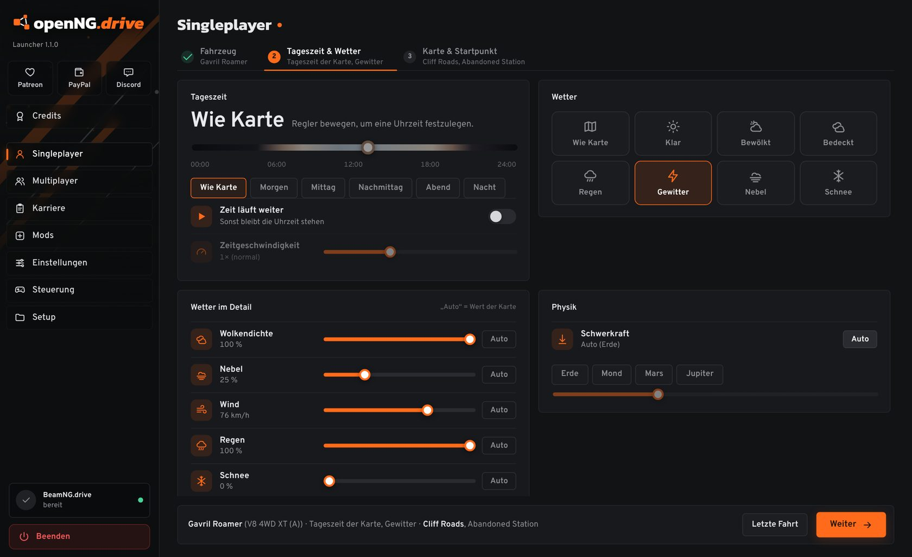
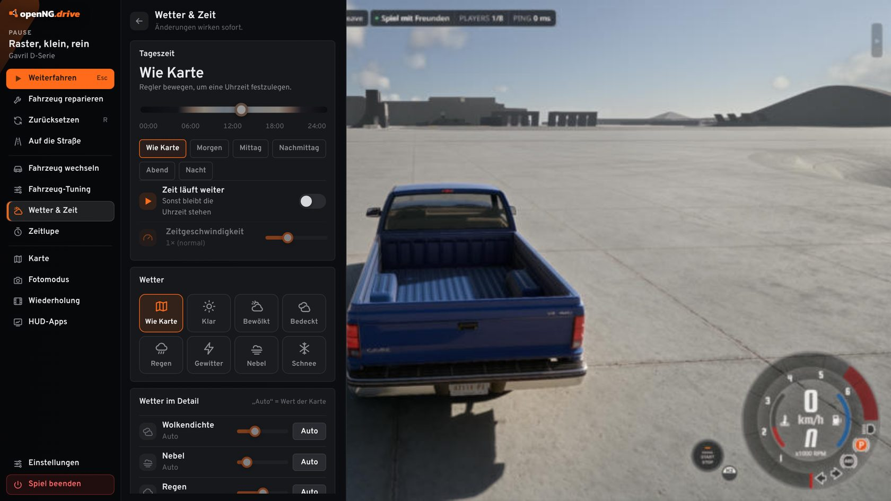
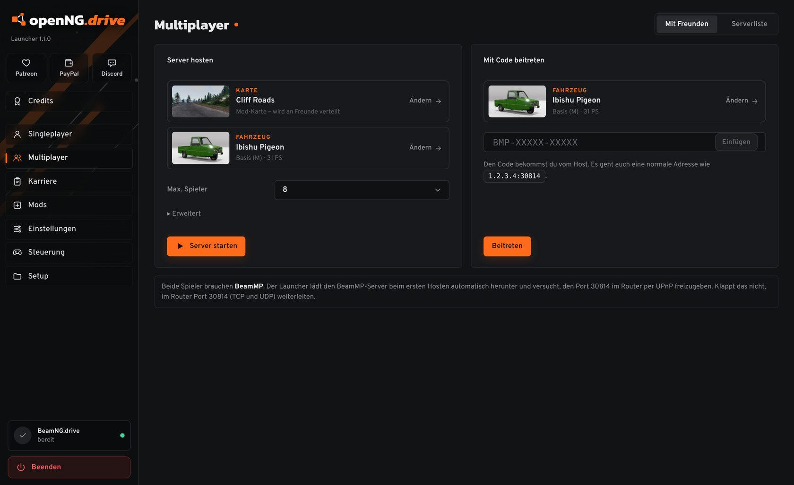
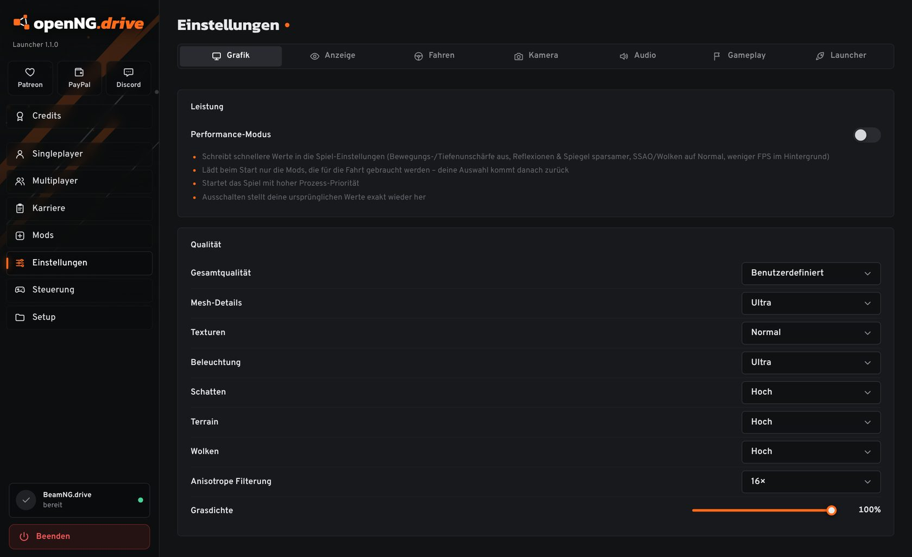

openNG.drive
Der Launcher für BeamNG.drive. Fahrzeug, Wetter und Karte auswählen, und du stehst direkt auf der Straße. Auch mit Freunden.

Weniger Menüs, mehr Fahren
BeamNG.drive hat viele Möglichkeiten, aber bis man fährt, klickt man sich durch einige Menüs. openNG.drive legt alles Wichtige vor den Start, und das Spiel lädt direkt so, wie du es eingestellt hast.

Fahrt einrichten, dann losfahren
Fahrzeug, Tageszeit und Wetter, Karte und Startpunkt: drei Schritte, danach startet das Spiel direkt auf der Karte.
- Alle Presets eines Fahrzeugs mit Vorschaubild
- Wetter bis ins Detail: Wolken, Nebel, Wind, Regen mit Geräusch, Schnee
- Startpunkt per Klick auf der Minimap

Ein Pausenmenü, das ins Spiel passt
Esc öffnet das openNG-Menü direkt in BeamNG.drive, als Leiste am linken Rand. Das Spiel läuft flüssig weiter, die Maus bleibt sichtbar.
- Reparieren, zurücksetzen, zurück auf die Straße
- Fahrzeug wechseln oder ein zweites daneben spawnen
- Wetter ändern, Karte, Fotomodus, Wiederholung, Tuning, HUD-Apps

Mit Freunden spielen
Server hosten, Code an Freunde schicken, fertig. openNG.drive richtet den BeamMP-Server ein und bringt alle direkt auf die Karte, im ausgewählten Fahrzeug.
- Beitreten mit einem kurzen Code statt IP und Port
- Öffentliche BeamMP-Server mit Kartenbild und Spielerzahl
- Karriere zusammen mit Freunden

Einstellungen ohne Umweg über das Spiel
Grafik, Steuerung, Lenkrad und Kamera lassen sich vor dem Start ändern. Der Performance-Modus holt auf schwächeren PCs spürbar FPS heraus und stellt beim Ausschalten alles wieder her.
- FSR und DLSS über ReShade, wenn installiert
- Mods mit einem Klick an- und ausschalten
Download
Eine Zip-Datei mit dem Launcher und dem BeamMP-Installer, keine Installation nötig. Du brauchst nur BeamNG.drive; BeamMP für den Multiplayer ist mit dabei.
openNG.drive herunterladen- EntpackenRechtsklick auf die Zip, „Alle extrahieren…“, zum Beispiel nach
D:\. Es entsteht der OrdnerD:\openNG.drive\. - openNG.drive.exe startenZeigt Windows „Der Computer wurde durch Windows geschützt“, auf „Weitere Informationen“ und dann „Trotzdem ausführen“ klicken. Das passiert bei neuen Programmen ohne Signatur.
- LosfahrenDas Spiel wird automatisch gefunden. Falls nicht, kannst du den Ordner unter Setup auswählen. BeamMP installierst du bei Bedarf unter Multiplayer → Serverliste.
Fragen
Ist openNG.drive ein offizielles Programm?
Nein. Es ist ein Fanprojekt und weder mit BeamNG GmbH noch mit BeamMP verbunden. Du brauchst eine eigene Kopie von BeamNG.drive.
Verändert der Launcher meine Spieldateien?
Er schreibt nur in deinen BeamNG-Benutzerordner: deine Einstellungen, wenn du sie im Launcher änderst, die Dateien für das Pausenmenü unter ui/openng und, im Performance-Modus, die Liste aktiver Mods. Die Mod-Auswahl und alle Einstellungen werden danach wiederhergestellt. Die Installation des Spiels selbst bleibt unverändert.
Brauche ich BeamMP?
Nur für Multiplayer. Alles andere funktioniert ohne. Wenn BeamMP fehlt, bietet der Launcher die Installation an.
Wo finde ich meine Einstellungen und Profile?
Im Ordner openNG-data neben der Exe, inklusive der Karriere-Backups (SPprofile<Name>). Den Ordner kannst du einfach mitkopieren.
Das Spiel startet, aber das Pausenmenü erscheint nicht.
Unter Einstellungen, Launcher muss „Eigenes Pausemenü im Spiel“ eingeschaltet sein. Danach das Spiel einmal über den Launcher neu starten.